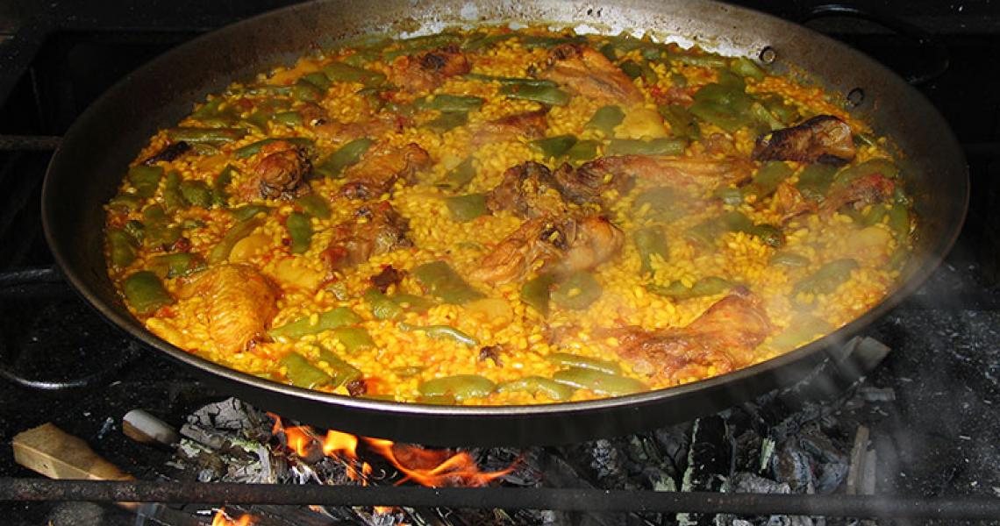

Paella

Paella is a spanish classic, a simple recipe that's very butchered around the world and even among the spanish ourselves! So we'll try to stick to a traditional Paella Valenciana out of duty as a proud born and raised Spanish citizen!
Ingredients
We can easily begin this recipe with the following ingredients! This should be good to feed 4 people. And given the country origin, I'll be using metric measurements this time! List's so short that you'll be surprised how simple this recipe is! It's all in the cooking process.
- 250gr round-grain rice
- 600gr chicken, preferably drums or legs (up to your choice anyway!)
- 1 ripe tomato
- 150gr flat green beans
- 150gr lima beans
- 2 generous spoonfuls of olive oil
- 1 teaspoon of sweet paprika
- A pinch of saffron
- Salt (to taste)
- 750ml of water (the rate's 3 times the amount of water per unit of rice)
- A paellera! A pan specially devised for the cooking of Paella. It's absolutely worth it.
Steps
It's time to follow the steps. This'll take some patience, key's in it.
- Heat the oil in the paella pan and, when hot, add the chopped chicken and rabbit. Sauté them with salt, stirring so they cook evenly.
- Once the chicken and rabbit are browned, add the beans, lima beans, and chopped grated tomato, and mix everything well.
- Next, add the sweet paprika, and immediately add water up to the cloves in the paella pan to prevent it from burning. Bring it to a boil and, once boiling, let it simmer for 5 minutes. Then, reduce the heat and let it cook for 20 to 30 minutes over medium heat.
- Add the saffron and adjust the salt if needed.
- After this time, increase the heat and add the rice. The traditional way to distribute it is to make a cross in the boiling water and then spread it evenly over the surface of the pan. Adjust the salt if necessary.
- This is the moment to control the heat. It needs high heat for 10 minutes and another 10 minutes of lower heat so that the rice is cooked perfectly.
Now, it is also very spanish-like to let the bottom layer of the rice crisp up, forming a very rich in flavour layer called socarrat. Scrape that layer up and enjoy!
That's all, foodie!
And that's it for your Paella! Some people like to let it rest a little covering it under a cloth or aluminium foil, but you can dig right in once finished! And always remember to finish your food!
Home